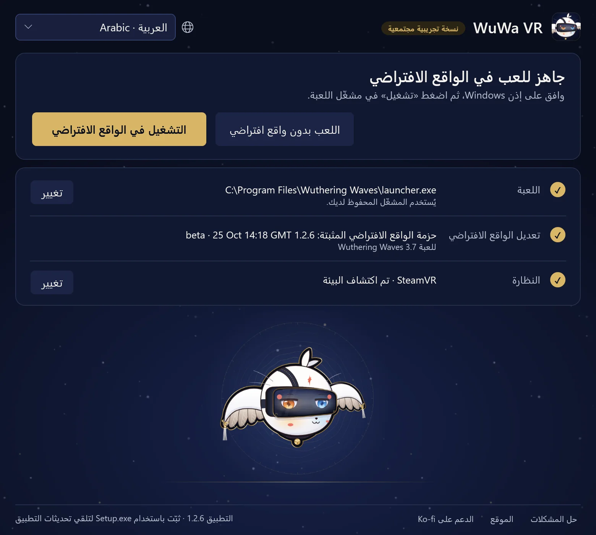

الدليل1.2.7 دليل اللاعب · Wuthering Waves 3.8 · Windows PCVR
العب WuWa في الواقع الافتراضي
ثبّت WuWa-VR-Setup.exe، ثم افتح اختصار WuWa VR. لا حاجة لتثبيت Python منفصل. يحتاج أول تثبيت لحزمة الواقع الافتراضي إلى اتصال بالإنترنت؛ وملف Setup الصغير الذي نزّلته يحتوي على تطبيق المشغّل.
التثبيت والتشغيل
المشغّل شاشة واحدة. يخبرك العنوان بالخطوة التالية، وتحته التشغيل في الواقع الافتراضي واللعب بدون واقع افتراضي وثلاثة صفوف: اللعبة وتعديل الواقع الافتراضي والنظارة. تُحفظ اختياراتك، لذا تنتقل في المرات القادمة مباشرة إلى التشغيل في الواقع الافتراضي.
- يعرض صف اللعبة نسخة Steam أو نسخة مشغّل Kuro الرسمي التي عُثر عليها. استخدم تغيير لاختيار نسخة أخرى؛ وفي Steam اختر
Wuthering Waves.exeوليس ملف Shipping الداخلي. نسخة Epic غير مدعومة بعد. - يعرض صف تعديل الواقع الافتراضي الحزمة المثبّتة وإصدار اللعبة المخصّصة له. في المرة الأولى، اقرأ تنبيه المخاطر على الحساب ثم اختر تثبيت الواقع الافتراضي. يُتحقق من الحزمة قبل تثبيتها، ولا يؤدي التثبيت إلى تشغيل اللعبة.
- يعرض صف النظارة بيئة OpenXR المستخدمة، لذا شغّل برنامج نظارتك أولًا. يفتح تغيير خياري استخدام النظارة واستخدام المحاكي المضمّن، وهو معاينة على سطح المكتب. قد يطلب التبديل إذن Windows ويتطلب إغلاق اللعبة وأداة الحقن الخاصة بها؛ ولا يؤدي فتح المشغّل أو تثبيته أو تحديثه إلى التبديل من تلقاء نفسه أبدًا.
تطبيق المشغّل هو هذه النافذة المكتبية. أما حزمة الواقع الافتراضي فهي التعديل وأدواته. وتحديث أحدهما لا يحدّث الآخر تلقائيًا.


اختر التشغيل في الواقع الافتراضي. تضيء أربع خطوات مع التقدّم: الإذن (اختر نعم في نافذة Windows)، واضغط تشغيل (في مشغّل Kuro؛ أما Steam فيشغّل اللعبة بنفسه)، وبدء الواقع الافتراضي (عادةً أقل من دقيقة)، وفي الواقع الافتراضي.
عند دخول الواقع الافتراضي يعرض المشغّل يمكنك إغلاق هذه النافذة. يستمر الواقع الافتراضي في العمل. وإذا استغرق بدء الواقع الافتراضي وقتًا أطول من المعتاد، يخبرك بذلك ويعرض التفاصيل. يلغي إيقاف الانتظار الانتظار دون إغلاق اللعبة.
يشغّل اللعب بدون واقع افتراضي نسخة اللعبة نفسها بشكل عادي، دون التعديل.
التحكم اليومي
Xbox / XInput هو طريقة اللعب المعتادة. L3 / R3 تعني الضغط على العصا اليسرى / اليمنى. غير متأكد؟ اضغط مطولًا L3، أو LT + RT، لنصف ثانية: تظهر بطاقة أسفل نظرك تبيّن وظيفة كل زر وتضيئه عند الضغط عليه. اترك الأزرار بين الاختصارات. تعرض الجداول أدناه كل الاختصارات مجمّعة كما في البطاقات.

- LTالنافذة
- LBوضع الواجهة / الماوس
- Viewمنظور الشخص الأول
- أزرار الاتجاه ↓منظور الشخص الأول: الحركة الكاملة
- RTالمجسم المصغّر (10×)
- RBكاميرا اللعبة أو كاميرا ثابتة
- Menuإبقاء هذه البطاقة مفتوحة
- Y/Xالكاميرا أعلى / أسفل
- Bإظهار واجهة اللعبة أو إخفاؤها
- Aإعادة تمركز العرض
- R3قائمة WuWa VR
الإيماءات
- R3×2كاميرا حرة
- L3×2لقطة شاشة
- LT+RT→R3نقر: VR كامل / الشاشة المجسمة
- LT+RT→R30.8 sاضغط مطولًا: تشغيل أو إيقاف مسرح المونو
- LT+RT→L3نقر: تشغيل التمويه / إيقافه
- LT+RT→Yاضغط: إخفاء الشخصيات عند عينيك
chronohaxx.github.io/wuwa-vr
دعم PlayStation تجريبي.
كل الاختصارات
اضغط مطولًا L3
| L3+LT | النافذة |
|---|---|
| L3+LB | وضع الواجهة / الماوس |
| L3+View | منظور الشخص الأول |
| L3+الاتجاه للأسفل | منظور الشخص الأول: الحركة الكاملة |
| L3+RT | المجسم المصغّر (10×) |
| L3+RB | كاميرا اللعبة أو كاميرا ثابتة |
| L3+Menu | إبقاء هذه البطاقة مفتوحة |
| L3+Y/X | الكاميرا أعلى / أسفل |
| L3+Y/X | كاميرا القصة: اقتراب / رجوع |
| L3+Y+X | Y + X معًا: العودة إلى الافتراضي |
| L3+B | إظهار واجهة اللعبة أو إخفاؤها |
| L3+A | إعادة تمركز العرض |
| L3+R3 | قائمة WuWa VR |
| R3×2 | كاميرا حرة |
| L3×2 | لقطة شاشة |
اضغط مطولًا LT + RT
| LT+RT→R3 | نقر: VR كامل / الشاشة المجسمة |
|---|---|
| LT+RT→R30.8 s | اضغط مطولًا: تشغيل أو إيقاف مسرح المونو |
| LT+RT→L3 | نقر: تشغيل التمويه / إيقافه |
| LT+RT→L30.8 s | تشغيل الشاشة المجسمة أو إيقافها (اضغط مطولًا 0.8 ث) |
| LT+RT→Y | اضغط: إخفاء الشخصيات عند عينيك |
الكاميرات
| LB+LT/RT | ثابت: أبعد / أقرب |
|---|---|
| اضغط مطولًا RB | السرعة الكاملة عند تفعيل Polar walk |
| أثناء تشغيل الكاميرا الحرة R3×2 | |
| العصا اليسرى / اليمنى | كاميرا حرة: تحرك / انظر |
| LT/LB | كاميرا حرة: صعود / هبوط |
| RT / ضغط RT مرتين | كاميرا حرة: تسارع / توربو |
القوائم و HUD
| LB+R3 | V مرة واحدة؛ اضغط مطولًا 0.8 ث لعجلة Tab |
|---|---|
| أثناء تشغيل وضع الواجهة / الماوس L3+LB | |
| العصا اليسرى | تحريك المؤشر |
| A/B | نقر / رجوع |
| X+العصا اليسرى | تمرير |
| أزرار الاتجاه | تحريك الخريطة |
| LT/RT | تقريب الواجهة / إبعادها |
| LB/RB | الواجهة أسفل / أعلى |
قائمة WuWa VR
| L3+R3 | فتح / إغلاق قائمة WuWa VR |
|---|---|
| عند فتح قائمة WuWa VR L3+R3 | |
| أزرار الاتجاه / A / B | تنقل / تفعيل / رجوع |
| LB/RB | تغيير الصفحة |
| Y | تحريك القائمة |
لوحة المفاتيح والماوس
| مفتاح VR | اضغط مطولًا المفتاح الذي على يسار 1، ثم اضغط مفتاحًا |
|---|---|
| مفتاح VR+1 | VR كامل / الشاشة المجسمة |
| مفتاح VR+2 | مسرح المونو |
| مفتاح VR+3 | النافذة |
| مفتاح VR+4 | المجسم المصغّر (10×) |
| مفتاح VR+B | الضبابية (عمق الميدان) |
| مفتاح VR+N | إخفاء الشخصيات عند عينيك |
| مفتاح VR+H | إظهار واجهة اللعبة أو إخفاؤها |
| مفتاح VR+R | إعادة تمركز العرض |
| مفتاح VR+P | لقطة شاشة |
| مفتاح VR+F | منظور الشخص الأول |
| مفتاح VR+T | كاميرا اللعبة أو كاميرا ثابتة |
| مفتاح VR+C | كاميرا حرة |
| مفتاح VR+G | منظور الشخص الأول: الحركة الكاملة |
| مفتاح VR+E/Q | الكاميرا أعلى / أسفل |
| مفتاح VR+E+Q | E + Q معًا: العودة إلى الافتراضي |
| مفتاح VR+عجلة الماوس | الكاميرا الثابتة أقرب / أبعد |
| مفتاح VR+M | وضع الواجهة / الماوس |
| مفتاح VR+K | إبقاء هذه البطاقة مفتوحة |
| Insert | فتح / إغلاق قائمة WuWa VR |
| أثناء تشغيل الكاميرا الحرة مفتاح VR+C | |
| WASD/الماوس | كاميرا حرة: تحرك / انظر |
| مسافة/Ctrl | كاميرا حرة: صعود / هبوط |
| Shift/Shift×2 | كاميرا حرة: تسارع / توربو |
لوحة المفاتيح والفأرة: Insert يفتح القائمة أو يغلقها. في VR الكامل يُظهر سهم مكان الفأرة على قوائم اللعبة، ويختفي عند استخدام وحدة التحكم. ما دامت اللعبة في المقدمة تبقى الفأرة داخل نافذتها؛ يوقف ذلك خيار إبقاء الفأرة داخل نافذة اللعبة في صفحة راحة من القائمة.
PS4 / PS5: عند استخدام Steam Input أو أي تعيين يعمل مع Xbox / XInput، تبقى الاختصارات نفسها. الأزرار Cross / Circle / Square / Triangle تعادل A / B / X / Y، وL1 / R1 تعادل LB / RB، وL2 / R2 تعادل LT / RT، وShare / Create تعادل View، وOptions تعادل Menu. كما تدعم الإدخالات المباشرة التجريبية لأجهزة DualShock 4 وDualSense عند عدم وجود يد تحكم XInput نشطة، لكن قد تتفاعل اللعبة مع نفس الأزرار. راجع المرجع الكامل.
تحتوي صفحة View في قائمة WuWa VR على خيارات العرض والتمويه واللقطة القريبة. شاشة سينمائية تلقائية مفعّلة: تنتقل فيديوهات القصة إلى المسرح الأحادي وصور القصة إلى الشاشة المجسمة، ثم يعود عرضك؛ وتحتفظ المحادثات بالعرض الذي اخترته. اختصار العرض يعمل دائماً.
خيارات إضافية: المشي باستخدام أيدي التحكم في الواقع الافتراضي، والمجسّم المصغّر، وعرض اليدين.
تتيح وحدات تحكم VR (صفحتا الرئيسية والتحكم) استخدام وحدات تحكم Quest كوحدة Xbox للمشي والتجوال. تبدأ متوقفة في كل تشغيل. اضغط مطولًا زر Menu الأيسر لثانية واحدة لتشغيلها أو إيقافها (يؤكد ذلك اهتزاز)؛ والضغطة القصيرة تبقى Start. بدون زر Menu (Index) اضغط العصاتين معاً لثانية واحدة وهي متوقفة. مع وحدات تحكم VR تسمّي البطاقات المقابض والأزندة والعصي.
المشاركة مع Xbox / جهاز المشي تُحفظ: الاثنان معًا (افتراضيًا؛ يظل المشي على الجهاز يعمل)، أو الأخير يفوز، أو الواقع الافتراضي فقط. فتحة وحدة التحكم على تلقائي افتراضيًا: تستخدم الفتحة التي فيها وحدة تحكم، مثل وحدة التحكم الافتراضية لـ Reality Runner. كلاهما في صفحة التحكم في قائمة WuWa VR، مع جولة على جهاز المشي: عندما يكون Reality Runner مفتوحاً يبدأ المشي جولة تحسب زمنك وتحفظ مسارك داخل اللعبة. راجع مرجع المشي.
يحتاج المجسم المصغّر إلى Native Stereo ويضخّم حركة الرأس مع مقياس العالم؛ وإيقافه يعيد مقياسك الطبيعي. يحدد مقياس المجسم المصغّر في صفحة الكاميرا حجمه (من 2× إلى 10×). عرض اليدين / الأصابع للعرض فقط، بلا إمساك أو إيماءات.
التحديثات والتراجع
عند توفر إصدار جديد من التطبيق يعرضه المشغّل عليك: حدّثه ثم أعد تشغيله حين لا يعمل شيء. وإذا بدأ التطبيق واللعبة مغلقة، يثبّت من تلقاء نفسه حزمة واقع افتراضي أحدث لإصدار اللعبة نفسه، وتبقى الحزمة التي كانت لديك مثبّتة. يعرض حل المشكلات ← خيارات أخرى الإصدارات المثبّتة والمنشورة ويتضمن البحث عن تحديثات. فشل البحث عن التحديثات أو وجود قائمة مخزّنة مؤقتًا لا يعني أن حزمتك محدّثة.
يجمع هذا الإصدار التطبيق 1.2.7 مع الحزمة beta-1-2-7، للعبة WuWa 3.8. للتراجع عن تحديث حزمة الواقع الافتراضي، أغلق اللعبة ثم استخدم استخدام الإصدار المثبّت السابق في حل المشكلات ← خيارات أخرى. لا يعيد هذا تطبيق المشغّل إلى إصدار سابق. تبقى الإعدادات والنسخ الاحتياطية والتسجيلات.
إذا كان تحديث التطبيق محظورًا، فاستخدم أحدث Setup من الموقع. إعادة التثبيت لا توقف عملية خلفية عالقة؛ استخدم خطوات الاستعادة أدناه أولًا.
بديل محمول
نزّل WuWa-VR-Launcher.zip من الإصدار المطابق، واستخرج كل المحتويات، ثم افتح WuWa VR Launcher.exe. أبقِ مجلداته معًا. هذا يفتح واجهة أداة الويب المنفصلة؛ ولا يحدّث تطبيق سطح المكتب المثبّت.
إذا حدث خطأ ما
افتح حل المشكلات أسفل المشغّل وجرّب حلوله من الأعلى. يعيد إصلاح ملفات التعديل تثبيت ملفات التعديل من نسخة موثّقة ويحتفظ بإعداداتك. يعيد إعادة ضبط إعدادات التعديل إعدادات التعديل إلى ما كانت عليه عند الإصدار، بعد حفظ نسخة احتياطية من إعداداتك. يضع حفظ تقرير مشكلة سجلاتك وإعداداتك في ملف zip واحد على سطح المكتب، دون اسم مستخدم Windows: أرسله عندما تطلب المساعدة.
تضم خيارات أخرى البقية: فحص يد التحكم، والتحقق من جاهزية التشغيل، ونسخ التشخيص، وفتح مجلد الإعدادات، والإصدارات المثبّتة، وعمليات المشغّل العالقة، والتحضير لإلغاء التثبيت.
- توقّف بدء التشغيل: استخدم إيقاف الانتظار وانتظر حتى أربع ثوانٍ. إذا لم يستطع المشغّل التأكد من توقّف بدء التشغيل، فإنه يعرض عمليات المشغّل العالقة: اختر البحث عن عمليات المشغّل العالقة، وحدّد فقط العملية التي تريد إيقافها، ثم أكّد إيقاف المحدد. لا يوجد شيء محدد مسبقًا. بعد ذلك اختر إعادة محاولة الاتصال.
- لا يمكن إغلاق المشغّل: خيار Close launcher only يغلق النافذة فقط، دون التأثير على العمليات الخلفية. لا يؤدي الاسترداد إلى إيقاف WuWa أو Steam أو أداة الحقن أو بيئة VR.
- يد التحكم غير موجودة: يقوم خيار Controller check بقراءة فتحات XInput ومعلومات HidHide دون تغيير أي إعدادات. وجود فتحة متصلة لا يعني بالضرورة أن اللعبة تتلقى الأزرار.
- الواجهة أو القوائم تبدو خاطئة: في صفحة الواجهة من قائمة WuWa VR يوجد تحديث تخطيط الواجهة؛ وفتح ESC وإغلاقه يعيد ترتيب الواجهة أيضاً. تستخدم الواجهة والقوائم تخطيط 16:9 من اللعبة المسطحة؛ ويبدّل تخطيط الواجهة 16:9 في الصفحة نفسها إلى التخطيط الأقدم الأطول. L3 + B يُظهر واجهة اللعبة المخفية مجدداً.
- القائمة مفقودة: Ctrl+Shift+Home يفتح قائمة WuWa VR وCtrl+Shift+End نافذة UEVR الكلاسيكية، مهما كانت إعدادات القائمة.
- الإبلاغ عن مشكلة: في صفحة تسجيل من قائمة WuWa VR، حدد ما حدث واختر حفظ التقرير؛ وفي المشغّل استخدم حفظ تقرير مشكلة. أرفق إصداري التطبيق وحزمة الواقع الافتراضي، ووصف ما حدث، وتسجيلًا إن وُجد، في بلاغ.
إزالة الإصدارات المنزّلة أو إلغاء تثبيت التطبيق
يعيد حل المشكلات ← خيارات أخرى ← التحضير لإلغاء التثبيت أولًا إعدادات UEVR إلى ما كانت عليه قبل التعديل (مع حفظ نسخة احتياطية من إعدادات التعديل أولًا)، ثم يزيل التنزيلات الموثّقة بعد تأكيدك، حين لا يعمل شيء. بعد ذلك ألغِ تثبيت التطبيق من إعدادات Windows ← التطبيقات. تبقى اللعبة والنسخ الاحتياطية والتسجيلات وحزمة OpenXR النشطة والملفات المشغولة أو غير الموثّقة. لا توقف إعادة التثبيت أي عملية خلفية عالقة.
التسجيل والقيود الحالية
ابدأ التسجيل وأوقفه من قائمة WuWa VR (تسجيل الفيديو) أو من أدوات المطورين في حل المشكلات ← خيارات أخرى. يعمل التسجيل مع SteamVR والمحاكي المضمّن، ولا يعمل مع VDXR؛ ومع SteamVR يمكنه أيضًا تسجيل صوت اللعبة وميكروفون. تُغطّى معرّفات اللاعبين أثناء التسجيل. افحص الفيديوهات بحثًا عن الأسماء وبيانات الحساب قبل مشاركتها. راجع دليل الملاحظات.
ما اختُبر في هذا الإصدار والحدود المعروفة موجودة في ملاحظات الإصدار. من المشكلات المعروفة: علامات المهام أدنى قليلاً من هدفها في VR الكامل، وأيقونات أكثر تسطحاً في شاشة الشخصية (تستخدم التخطيط الأطول ليبقى انعكاس الأرضية حياً)، وخلفيات قوائم مسطحة تتحرك، وتوقفات طويلة في المشاهد أو الحوارات. يساعد المسرح الأحادي في بعض القوائم والمشاهد السينمائية.
مرجع مفصّل (بالإنجليزية): كل الاختصارات مع البحث، وإعدادات الراحة، والمشكلات المعروفة.